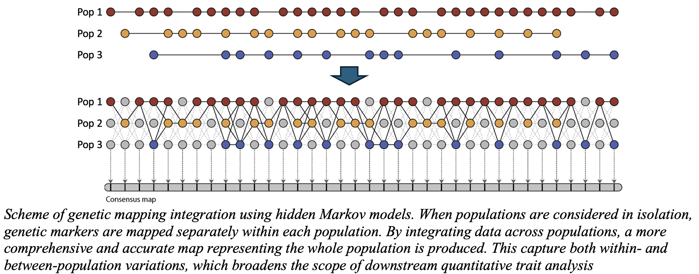
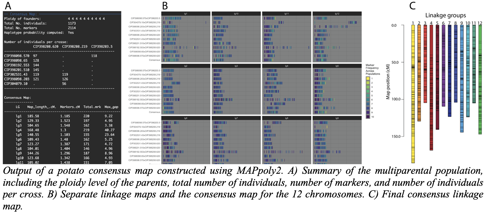
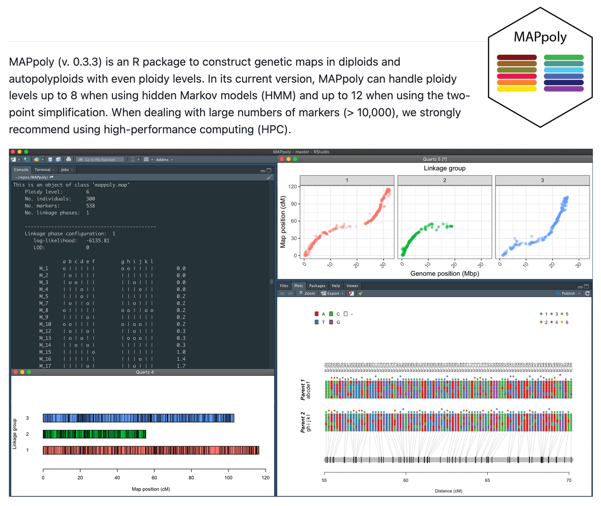
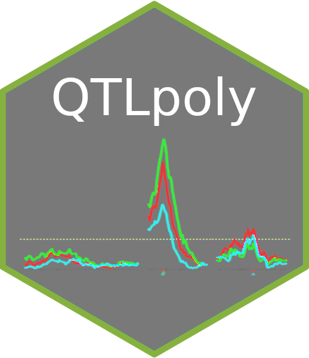
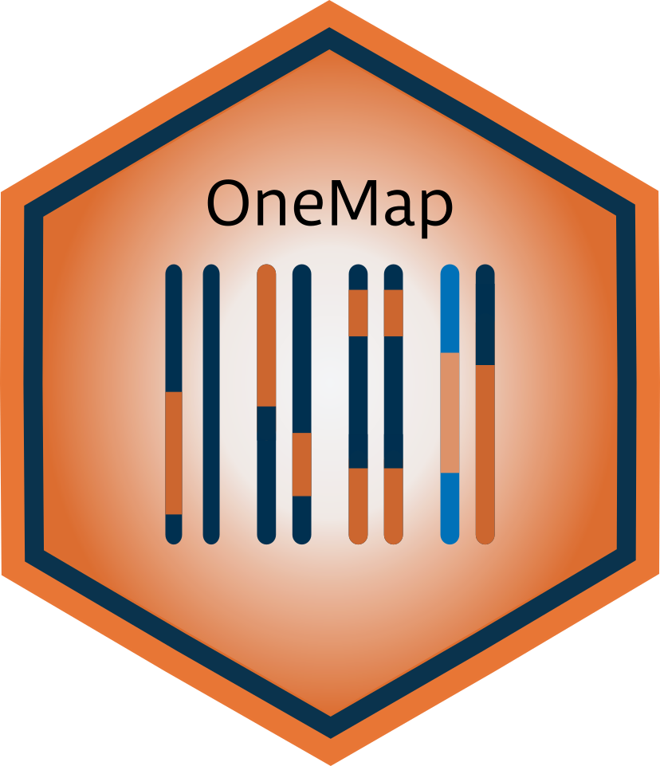
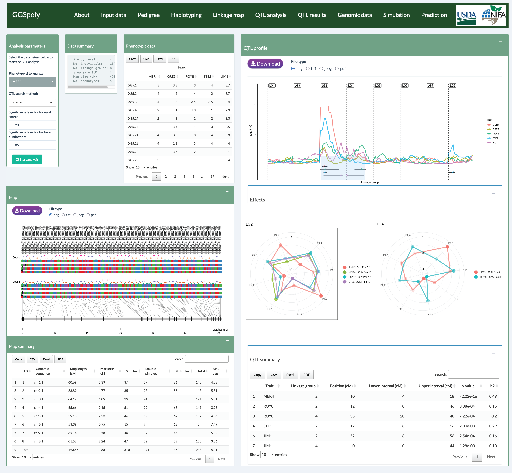

About Me
Welcome to my personal website! I am Dr. Marcelo Mollinari, a Research Assistant Professor at North Carolina State University, affiliated with both the Bioinformatics Research Center and the Department of Horticultural Science. I specialize in bioinformatics and plant genetics, leading research in diploid and polyploid breeding systems by developing unique algorithms that analyze interconnected families and translate genomic data into actionable insights. I collaborate closely with breeders of various crop species—including potatoes, sweetpotatoes, berries, and sugarcane to improve crop productivity, resilience, and sustainability. My interest lies in bridging the gap between data science and agricultural innovation, ultimately providing genetic analysis tools that support discovery and practical breeding solutions for researchers and breeders.
Research
My research interests span a wide range of topics in bioinformatics and plant genomics, with a focus on genetic analysis in outcrossing diploid and polyploid species. Here’s a brief overview of my work:
- Statistical Method Development: I work on practical methods for genetic mapping, QTL analysis, and quantitative trait analysis in interconnected populations of diploids and polyploids.
- Haplotype Inference and Consensus Mapping: By constructing consensus genetic maps and inferring population haplotypes, I enhance data accuracy and provide a clearer picture of genetic relationships. My algorithms are designed to handle crosses within the same even ploidy levels (2, 4, and 6) as well as crosses between different ploidy levels.
- Software Implementations: The most sophisticated models are incomplete without software that can efficiently handle and analyze real datasets. To address this, I have developed several R packages, including MAPpoly, MAPpoly2, QTLpoly, VIEWpoly, and GGSpoly (currently in development). The core functions responsible for the heavy lifting in high-dimensional genetic systems are implemented in C++ (a language I’m a big fan of!) to ensure high performance and scalability.
- Web-Based Platforms: More recently, I have been developing a web-based platform called GGSpoly, designed to help breeders analyze genomic data in diploid and polyploid species. This platform will offer an intuitive interface for users to upload and analyze their data, visualize results, and explore genetic relationships with ease.
Software
These are some software tools I have maintained and contributed to:
-
– SIMpoly - Simulation of Genetic Marker Data in Pedigreed Populations
GitHub
Repository (creator)
SIMpoly This is a new addition to my package suite - a simple tool designed to simulate interconnected populations for testing mappoly2. I have no plans to publish or submit it to CRAN, but I’m making it available in case others find it useful.
-
– Genetic maps in interconnected diploid and autopolyploid families.
GitHub
Repository (creator)
MAPpoly2 is an advanced R package designed for constructing genetic maps in interconnected full-sib autopolyploid families. This enhanced version prioritizes user-friendliness and accessibility, with improvements geared toward seamless integration with tools like R Shiny to provide an intuitive interface for polyploid genetic mapping. The package supports ploidy levels of 2, 4, and 6, allowing for any combination of these configurations, making it highly versatile for diverse research needs.
A standout feature of MAPpoly2 is its significantly enhanced performance, achieved through the integration of computationally intensive code implemented in C++. This optimization enables the efficient analysis of large and complex datasets, addressing a common bottleneck in genetic mapping workflows.
The package employs a robust Hidden Markov Model (HMM) framework to construct individual genetic maps for each parent. These maps are then combined into a comprehensive joint map, which is recomputed to incorporate any remaining markers, ensuring high accuracy and resolution in the final results. These innovations make MAPpoly2 an invaluable tool for researchers working with polyploid species and large-scale genomic datasets.
 -
– Genetic maps in diploids and autopolyploids.
CRAN
Package (creator)
MAPpoly is a tool for genetic mapping in diploids and autopolyploids, providing statistical models...
 -
– Visualization of Genetic Analysis in Polyploids.
CRAN
Package (conceptual
lead)
VIEWpoly offers a powerful graphical user interface designed for integrating, visualizing, and exploring results from linkage and quantitative trait loci (QTL) analyses, along with genomic data, specifically tailored for autopolyploid and diploid species. This interactive application allows users to seamlessly upload and combine various data sources, including gene annotations and alignment files, to facilitate candidate gene exploration in an integrated genome browser.
VIEWpoly supports input from multiple tools beyond MAPpoly, including polymapR, diaQTL, QTLpoly, and polyqtlR, making it a versatile solution for researchers working with complex polyploid genetics. By enabling the integration of diverse datasets, VIEWpoly provides an interactive platform for comprehensive analysis and discovery in polyploid research.

-
– Random-Effect Multiple QTL Mapping in Autopolyploids.
CRAN
Package (contributor)
QTLpoly The R package QTLpoly is software to map quantitative trait loci (QTL) in full-sib families of outcrossing autopolyploid species based on a random-effect multiple QTL model (Pereira et al. 2020). Variance components associated with putative QTL are tested using score statistics (Qu et al. 2013), and final models are fitted using residual maximum likelihood (REML, adapted from the R package sommer).
 -
– Genetic mappings in experimental crosses.
CRAN
Package (co-creator)
OneMap is a software package designed for constructing genetic maps in experimental crosses, including full-sib, RILs, F2, and backcross populations. Originally developed by Gabriel R. A. Margarido, myself (Marcelo Mollinari), and A. Augusto F. Garcia, the project later welcomed contributions from Rodrigo R. Amadeu, Cristiane H. Taniguti, and Getulio C. Ferreira. OneMap has been available on CRAN for several years, with its most recent stable version released in 2020. The CRAN version is recommended for most users, while the development version—featuring ongoing improvements and experimental functions—is hosted on GitHub. A major milestone for OneMap was the integration of support for sequencing-based markers, such as those from Illumina and GBS technologies, allowing users to analyze modern genomic datasets effectively. The package provides a comprehensive set of functions for building linkage maps, with some specialized functions running internally to optimize analysis workflows.
 -
– Web-based platform for genomic data analysis in diploid and polyploid species.
Under development
(co-creator)
GGSpoly is a web-based tool for genomic data analysis in diploid and polyploid species. It provides an intuitive interface for breeders and researchers to upload, analyze, and visualize genomic data. The platform supports various genetic analysis tasks, including haplotype inference, QTL mapping, and consensus map construction. GGSpoly aims to bridge the gap between complex genetic models and practical breeding applications, making advanced genomic tools accessible to a broader audience. 
Selected Publications
- Mollinari M, Garcia AAF. (2019). Linkage analysis and haplotype phasing in experimental autopolyploid populations with high ploidy level using hidden Markov models. G3: Genes, Genomes, Genetics, https://doi.org/10.1534/g3.119.400378.
- Mollinari M, Olukolu BA, Pereira G da S, Khan A, Gemenet DC, Yencho GC, Zeng ZB. (2020). Unraveling the hexaploid sweetpotato inheritance using ultra-dense multilocus mapping. G3: Genes, Genomes, Genetics, https://doi.org/10.1534/g3.119.400620.
- Taniguti CH, Gesteira G de S, Lau J, Pereira G da S, Zeng Z-B, Byrne DH, Riera-Lizarazu O, Mollinari M. (2023). VIEWpoly: a visualization tool to integrate and explore results of polyploid genetic analysis. J. Open Source Softw., 7(74), 4242. https://doi.org/10.21105/joss.04242.
- Wu S, Sun H, Hamilton JP, Mollinari M, Gesteira SG, Kitavi M, Yan M, Kreuze J, Yencho GC, Buell R, Fei Z. (2024). Phased chromosome-level genome assembly offers new insights into the origin of hexaploid sweetpotato. bioRxiv. https://doi.org/10.1101/2024.08.17.608395. Under review.
- Gesteira GS, Pereira GS, Zeng ZB, Mollinari M. (2024). Genetic maps in sweetpotato. In The Sweetpotato Genome (pp. 45-68). https://doi.org/10.1007/978-3-031-65003-1_5.
Talks, Workshops and Teaching
Here are slides from some of the talks, workshops, and lectures I've given over the years:
- Theoretical and Practical Aspects of Linkage Analysis – A workshop presentation from the Breeding Insight Workshop at Cornell covering linkage analysis in diploids and polyploids, including genetic segregation, genotype calling, and polyploid inheritance patterns.
- Genomic Challenges in Polyploid Crops – Overview of the difficulties in genomic analysis and breeding of polyploids, covering variant discovery, genotype calling, and QTL mapping strategies.
- HS 703: Importance of Polyploidy, Inheritance Patterns, and Manipulation – Lecture discussing fundamental aspects of polyploid genetics, including meiotic pairing, gamete formation, and methods for analyzing segregation in polyploids.
- Introduction to MAPpoly – A training session on the MAPpoly software for genetic mapping in polyploids, detailing installation, data import, filtering, and map construction.
- Merging Maps from Multiple Populations – Explores methods for integrating genetic maps from multiple populations, with emphasis on recombination fractions, linkage phases, and marker ordering.
- The Sweetpotato Genome – Our book discusses the sequencing efforts and genetic research on sweetpotato, including its significance for food security, genomic resources, and marker-assisted breeding.
- Genetic Mapping in Polyploids: From Genotyping to Haplotype Reconstruction – Lecture at Universidade Federal de Goiás explaining key concepts in genetic mapping of polyploids, including linkage analysis, meiotic configurations, and computational tools.
- Updates: Introducing MAPpoly2 and QTLpoly – A presentation on recent developments in MAPpoly2 and QTLpoly, focusing on mixed-ploidy crosses, haplotype probabilities, and new computational methods.
Miscellaneous Scripts
Explore additional scripts and resources related to my research and software development:
- Practical guide to integrating C++ with R using Rcpp – This may be a decade old (time flies!), but I still find it valuable—a practical guide to integrating C++ with R using Rcpp, complete with examples, performance comparisons, and package development insights.
- Miscellaneous Scripts on GitHub – A collection of scripts and resources for various bioinformatics and genetic analysis tasks.